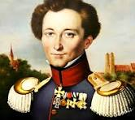
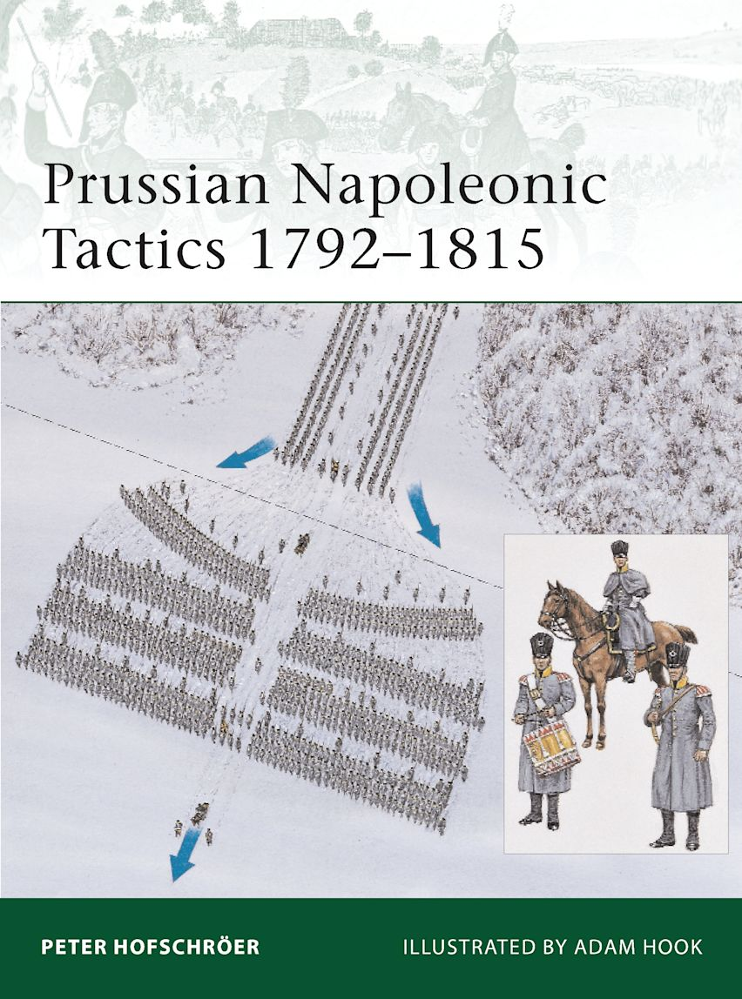
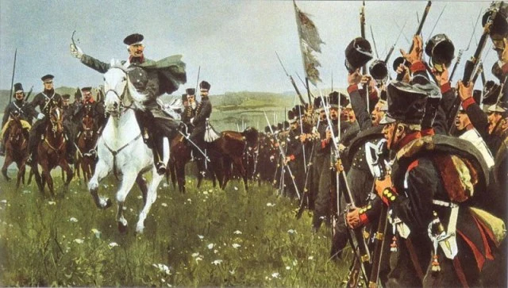
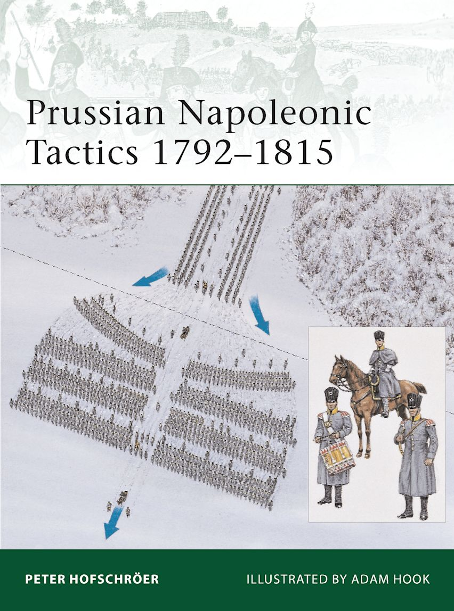
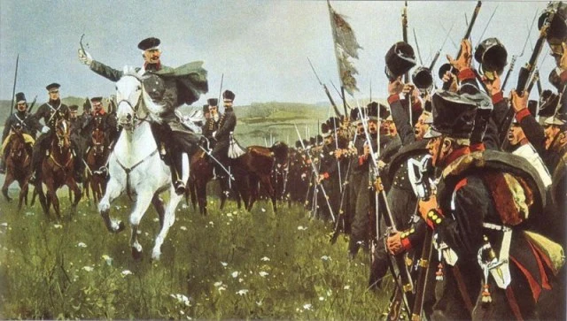

Welcome to Our Website
Nick & Christian
Carl von Clausewitz was a Prussian military official and war theorist who lived during the Napoleonic Wars. He developed the modern variant of war theory through his work, Vom Kriege.
Full Text Source 2What is War?
- War is the use of violence to enact the will of the state.
- War is a political endeavor, because policy necessarily cannot contradict the aims of war.
- States engage in war to advance the political aims of the state.
- In ideal war, each opponent must necessarily escalate the conflict until the utter destruction of the enemy is assured. Since the escalation of both sides is inevitable, this escalation will continue indefinitely.
- However, in real war, the means of war cannot exceed the ends of policy or war will become overly exploitative and chaotic.
Friction and Fog of War
- Friction refers to the minor unforseen difficulties that differentiate real war from ideal war.
- Friction allows for the commander's will, experience, and creativity to shine, independent from the algebraic nature of ideal war.
- Fog of war refers to uncertainty about the enemy. This can include an inability to determine their plans, intentions, strength, or their center of gravity, or even one's own situation.
- This imperfection of information accounts for the imperfection in calculations in real war.
Wonderous Trinity
- War is governed by passion, chance, and reason.
- Passion refers to the emotions and irrational anger of the populace.
- Chance refers to the commander's ability to capitalize on his situation, as well as the presence of uncertainty.
- Reason refers to a government's political aims.
- War cannot be governed purely by passion, because it will escalate beyond the confines of reality.
- War cannot be governed purely by chance, because there would be no ability to effectively control armies.
- War cannot be governed purely by reason, because humans are imperfect and are always bound to fail.
Schwerpunkt
- The schwerpunkt, or the center of gravity, refers to the source of the enemy's power.
- The schwerpunkt, if prioritized as the point of attack, will most weaken the enemy out of any other factor.
- It could be military force, morale, the passion of the populace, or their political stability.
Culminating Point
- The culminating point of war is the point at which an offensive risks overextension, exhaustion, or collapse.
- The existence of this moderates the escalatibility of war and emphasizes prudent strategy rather than the pure clash of wills through violence.
The Morality of War
- Violence, in absolute theory, is a morally neutral act.
- By extension, war is not inherently immoral.
- However, real war, while sometimes justified, can never be fully moral, because of the imperfection of those who engage in it.
- In an ideal world, war necessarily cannot exist, because all political conflicts could (and would) be solved through diplomatic action.
How war occurs:
- Politicians establish the aims and rationale for war.
- Military leadership develops strategy based on those aims.
- Armies mobilize and engage the enemy in pursuit of strategic objects.
- Both sides escalate violence until one loses the ability to continue.
- Negotiation and policy resume to define the post-war conditions.
| Concept | Ideal War | Real War |
|---|---|---|
| Nature | Theoretical and unlimited | Limited by reality and constraints |
| Goals | Total destruction of the enemy | Achieving political objectives |
| Friction | Nonexistent | Always present |
| Information | Perfect knowledge | Fog of war and uncertainty |
| Escalation | Infinite and inevitable | Limited by resources, morale, politics, and chance |
.jpeg)
.jpeg)
.gif) 


